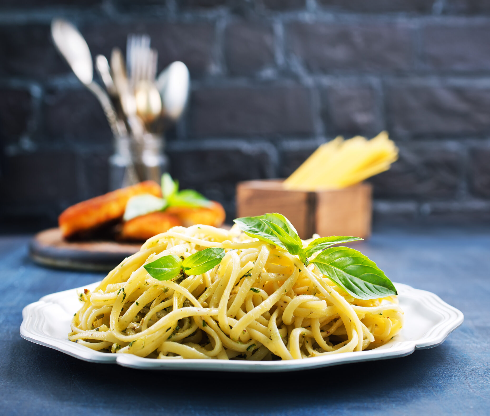

Macarrao na manteiga

Simples mas delicioso macarrao na manteiga
Ingreditentes:
- 200g de Macarrao
- Sal
- Manteiga
- Manjericao
Etapas:
- Coloque em uma panela grande, 5 litros de agua para esquentar em fogo alto
- Quando a agua estiver fervendo, adicione o macarrao
- Deixe cozinhar por 3 a 7 minutos, depende do tipo de macarrao, sendo o de semola necessario mais tempo para chegar ao ponto idel
- Reserve 100ml da agua do macarrao antes de escorrer
- Escorra o macarrao e volte a panela vazia ao fogo
- Adicione 150g de manteiga para derreter e deixe em fogo baixo, ate que sinta um cheiro leve do aroma de amendoas vindo da manteiga quente.
- Despeje de uma vez as 100ml da agua do macarrao na panela com manteiga
- Misture bem adicione folhas de manjericao
- Despeje o macarrao ja cozido na manteiga e misture muito bem
- Para finalizar, adicione queijo parmesao e uma pitada de sal, fica uma delicia